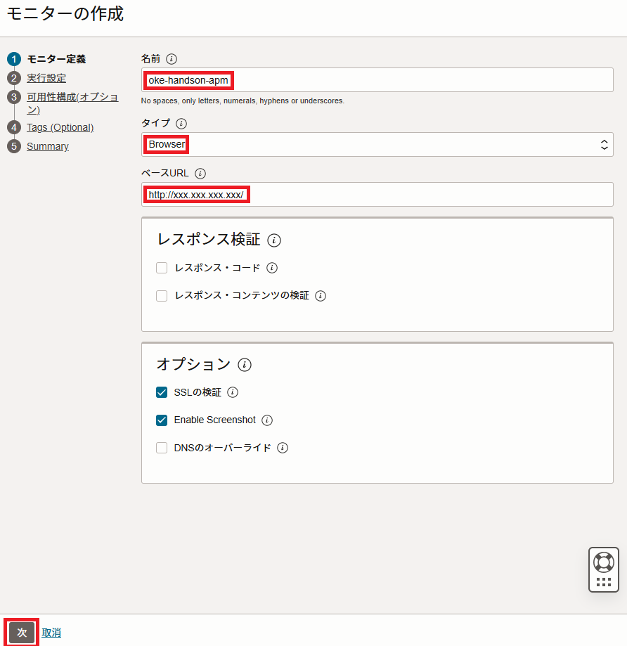
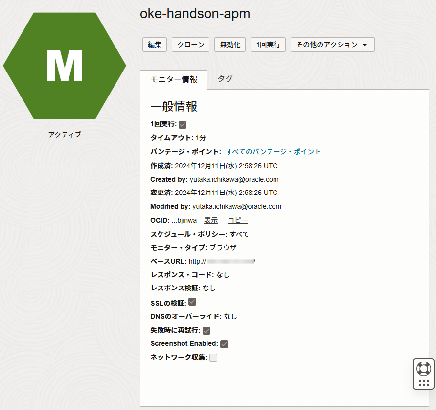

このハンズオンでは、Oracle Container Engine for Kubernetes（以下OKE）上に、マイクロサービスアプリケーションをデプロイします。そして、OCIのObservabilityサービスを利用して、モニタリング、ロギング、トレーシングを実践的に学びます。
OCIのObservabilityサービスとして、以下を利用します。
モニタリング
-
- Oracle Cloud Infrastructure Monitoring
- メトリックおよびアラーム機能を使用してクラウド・リソースを積極的および受動的にモニター可能なフルマネージドサービスです。
ロギング
-
- Oracle Cloud Infrastructure Logging
- 監査ログ、サービス・ログ、カスタム・ログに対応した、スケーラビリティの高いフルマネージド型のロギングサービスです。
トレーシング
-
- Oracle Cloud Infrastructure Application Performance Monitoring
- アプリケーションをモニターし、パフォーマンスの問題を診断するための包括的な機能セットが組み込まれたフルマネージドサービスです。
Oracle Cloud Observability and Management Platformについて
このハンズオンで利用するサービスは、Oracle Cloud Observability and Management Platform(以下、O&M)を構成するコンポーネントの一部です。
O&Mには、このハンズオンで利用するサービスの他にも、オンプレミスおよびマルチクラウド環境からすべてのログ・データを監視、集計、インデックス作成、分析可能なLogging Analytics、Oracle Enterprise Managerの主要な機能をクラウドサービスとして提供するDatabase Managementなどがあります。
ハンズオンの流れは以下となります。
- OKEクラスタ構築とOCIRセットアップ
- OCIダッシュボードからOKEクラスタの構築
- Cloud Shellを利用してクラスタを操作
- OCIRのセットアップ
- Application Performance Monitoring
- サンプルアプリケーションの概要説明
- サンプルアプリケーションとAPM連携設定
- APMドメインの作成
- サンプルアプリケーションへのAPM設定(ブラウザ側)とコンテナイメージ作成
- サンプルアプリケーションへのAPM設定(サーバサイド側)
- OCI APMでのトレーシング
- OCI APMでのアプリケーションサーバのメトリクス監視
- OCI APMでのリアルユーザモニタリング(RUM)
- OCI APMでの合成モニタリング(Synthetic Monitoring)
- Logging
- カスタム・ログの設定
- ワーカーノード上のアプリケーションログの確認
- Kubernetes APIサーバーの監査ログの確認
- Monitoring & Notifications
- Notificationsの設定
- Monitoringの設定
- MonitoringとNotificationsの実践
- 今回利用したサンプルアプリケーションの補足説明
ハンズオン概要図は以下となります。全環境の構築及びセットアップを行いながら、赤字で記載されている操作を実施します。

1.OKEクラスタ構築とOCIRセットアップ
Kubernetesクラスタの構築とコンテナイメージを格納するOCIRのセットアップを行います。

1-1 OCIダッシュボードからOKEクラスタの構築
左上のハンバーガーメニューを展開して、「開発者サービス」から「Kubernetesクラスタ(OKE)」を選択します。

左メニューにある「リスト範囲」のコンパートメント選択プルダウンメニューからご自身のコンパートメントを選択します。

「クラスタの作成」ボタンをクリックします。

「クイック作成」が選択されていることを確認して、「ワークフローの起動」ボタンをクリックします。

以下を設定の設定となっていることを確認します。
| key | value |
|---|---|
| Kubernetes APIエンドポイント | パブリック・エンドポイント |
| Kubernetesワーカー・ノード | プライベート・ワーカー |
| シェイプ | VM Standard.E3.Flex |
| OCPU数の選択 | 1 |
| メモリー量（GB） | 16 |

画面左下の「次」ボタンをクリックします。

画面左下の「クラスタ作成」ボタンをクリックします。

画面左下の「閉じる」ボタンをクリックします。

黄色の「作成中」から緑の「アクティブ」になることを確認します。「アクティブ」であればクラスタ作成は完了です。

1-2 Cloud Shellを利用してクラスタを操作
Cloud Shellを利用して、作成したKubernetesクラスタに接続します。
「クラスタへのアクセス」ボタンをクリックします。

「Cloud Shellの起動」ボタン、「コピー」リンクテキスト、「閉じる」ボタンの順にクリックします。

Cloud Shell起動後、「コピー」した内容をペーストして、Enterキーを押します。

以下コマンドを実行して、3ノードの「STATUS」が「Ready」になっていることを確認します。
kubectl get nodes
コマンド結果
NAME STATUS ROLES AGE VERSION
10.0.10.139 Ready node 2m7s v1.21.5
10.0.10.228 Ready node 2m22s v1.21.5
10.0.10.24 Ready node 2m27s v1.21.5
1-3 OCIRのセットアップ
後続手順で、サンプルアプリケーションをビルドして、コンテナイメージを作成します。
そのコンテナイメージを格納するコンテナイメージレジストリのセットアップを行います。
OCIでは、Oracle Cloud Infrastructure Registry(OCIR)を利用します。
OCIRについて
フルマネージドなDocker v2標準対応のコンテナレジストリを提供するサービスです。OKEと同一リージョンに展開することによる低レイテンシを実現します。 詳細はこちらのページをご確認ください。
左上のハンバーガーメニューをクリックして、「開発者サービス」-「コンテナ・レジストリ」を選択します。

ハンズオンに利用するコンパートメントついて
トライアル環境でのハンズオンの場合は、ルートコンパートメントを利用します。
OCIRのコンソール画面はデフォルトでルートコンパートメントが選択されますが、ご自身に割り当てられているコンパートメントがある場合は、そちらのコンパートメントを利用してください。
コンパートメントはOCIRのコンソール画面の左側から選択できます。

「リポジトリの作成」ボタンをクリックします。

「リポジトリ名」に「frontend-app-apm」と入力、「アクセス」で「パブリック」を選択して、「リポジトリの作成」ボタンをクリックします。

レポジトリ名について
OCIRのレポジトリ名はテナンシで一意になります。
集合ハンズオンなど複数人で同一環境を共有されている皆様は、frontend-app-apm01やfrontend-app-apm-tnなどの名前のイニシャルを付与し、名前が重複しないようにしてください。
OCIRにコンテナイメージをプッシュする際に必要となる、「Username」と「Password」を取得します。
「Username」は、<オブジェクト・ストレージ・ネームスペース>/<ユーザ名> となります。
＜ユーザ名＞を確認します。ユーザ名は右上にある「プロファイル」アイコンをクリックして、プロファイル名を選択します。

「ユーザーの詳細画面」の赤枠箇所をコピーして、テキストエディタにペーストしておきます。

次に、＜オブジェクト・ストレージ・ネームスペース＞を確認します。
右上にある「プロファイル」アイコンをクリックして、「テナンシ」を選択します。

「テナンシ詳細」の「オブジェクト・ストレージ・ネームスペース」の赤枠箇所をコピーして、テキストエディタにペーストしておきます。

次に、「Password」となる認証トークンを設定します。
右上にある「プロファイル」アイコンをクリックして、プロファイル名を選択します。

左メニュー「認証トークン」を選択します。

「トークンの作成」をボタンをクリックします。

「説明」に「oke-handson-apm」と入力して、「トークンの生成」ボタンをクリックします。

「コピー」をクリックして、「閉じる」ボタンをクリックします。 コピーした認証トークンは、後の手順で必要となるので、テキストエディタなどにペーストしておきます。

以上で、認証トークンの作成は完了です。
以下、テキストエディタにペーストした内容に当てはめて利用します。
| key | value |
|---|---|
| Username | <オブジェクト・ストレージ・ネームスペース>/<ユーザ名> |
| Password | 認証トークン |
以上でOCIRのセットアップは完了です。
2.Application Performance Monitoring
Kubernetesクラスタ上にサンプルマイクロサービスアプリケーションのデプロイとAPMのセットアップを行い、トレーシング、アプリケーションサーバのメトリクス監視、リアルユーザモニタリング、合成モニタリングを実践します。

2-1. サンプルアプリケーションの概要説明
まずはホームディレクトリに移動し、以下のGitレポジトリをcloneします。
cd ~
git clone https://github.com/oracle-japan/code-at-customer-handson
このハンズオン用に作成したサンプルアプリケーションです。
中身を簡単に紹介します。
.
├── README.md
├── k8s ==> KubernetesのMainifest群
├── olympic_backend_amp ==> バックエンドアプリケーション
├── olympic_datasource_amp ==> データソースアプリケーション
├── olympic_frontend_amp ==> フロントエンドアプリケーション
.
このサンプルアプリケーションは、主に以下の2つから構成されています。
- Helidon
- Oracleがオープンソースで提供しているJavaのマイクロサービスフレームワーク
- Oracle JavaScript Extension Toolkit（Oracle JET）
- Oracleがオープンソースで開発しているJavascript用フレームワーク
- 業界標準として普及しているオープンソース・フレームワークに基づき、開発者がより優れたアプリケーションをより迅速に構築できるよう支援する高度な機能とサービスを付加
簡単にアプリケーションの構成を見ていきます。
この手順が完了すると全体のイメージは以下のようになります。

Oracle Cloud Infrastructureの構成としては以下のような図になります。

このサンプルアプリケーションは、3つのコンポーネントから以下のように構成されています。
-
フロントエンドアプリケーション(図中の
Olympics)
HelidonとOracle JETから構成されているアプリケーションです。
Helidonの静的コンテンツルート(今回はresources/web配下)にOracle JETのコンテンツを配置しています。
このアプリケーションは、バックエンドサービス(v1/v2/v3)のいずれかを呼び出します。
また、このアプリケーションにはApplication Performance Monitoringで利用するAPM Browser AgentとAPM Server Agentが含まれています。 -
バックエンドアプリケーション(図中の緑枠部分)
Helidonから構成されているアプリケーションです。 このアプリケーションには3つのバージョンが存在し、それぞれ金メダメリスト(v3)、銀メダリスト(v2)、銅メダリスト(v1)の一覧を返すようになっています。 バージョン情報は環境変数として保持しています。 このアプリケーションは、データソースアプリケーションに対してバージョンに応じたAPIエンドポイントを呼び出し、データを取得しにいきます。
また、このアプリケーションにはApplication Performance Monitoringで利用するAPM Server Agentが含まれています。 -
データソースアプリケーション(図中の
Medal Info)
Helidonとインメモリで動作しているデータベースであるH2 Databaseから構成されているアプリケーションです。
このアプリケーションでは、メダリストと獲得したメダルの色を保持しており、バックエンドアプリケーションから呼び出されたエンドポイント応じてメダリストとそのメダルの色を返却します。
また、このアプリケーションにはApplication Performance Monitoringで利用するAPM Server Agentが含まれています。
Helidonについて
HelidonはMavenを利用してプロジェクトの雛形を作成することができます。
コマンドについてはこちらをご確認ください。
この中にはデフォルトでDockerfileも含まれています。
以降で利用するDockerfileも、基本的に上記雛形ファイルを利用しています。
また、HelidonにはHelidon CLIという便利なCLIツールがあります。
Helidon CLIについてはこちらをご確認ください。
2-2 サンプルアプリケーションとAPM連携設定
クローンしたサンプルアプリケーションにAPMと連携するための設定を行います。
本手順について
この手順2-2は、トライアル環境や管理者権限をお持ちの環境でハンズオンを実施されている皆様には不要な手順ですので、スキップしていただき、手順2-3から実施してください。
まずは、OCI APMを利用するためのポリシーを作成してきます。
OCIコンソールのハンバーガーメニューを開き、「アイデンティティとセキュリティ」から「ポリシー」を選択します。

「ポリシーの作成」をクリックします。

以下の情報を入力します。
また、「手動エディタの表示」にチェックを入れます。
| key | value |
|---|---|
| 名前 | apm_policy |
| 説明 | apm_policy |
| コンパートメント | ご自身のコンパートメント名 |
| ポリシー | Allow group APM-Admins to manage apm-domains in compartment id <ご自身のコンパートメントOCID> |

画像はイメージですので、コンパートメントOCIDはご自身の環境に合わせて読み替えてください。
「作成」をクリックします。
これで、ポリシーの設定は完了です。
2-3 APMドメインの作成
ここでは、APMドメインの作成を行います。
OCIコンソールのハンバーガーメニューを開き、「監視および管理」から「アプリケーション・パフォーマンス・モニタリング」カテゴリの「管理」を選択します。

「APMドメインの作成」をクリックします。

以下の情報を入力します。
| key | value |
|---|---|
| 名前 | oke-handson-apm |
| 説明 | oke-handson-apm |
集合ハンズオンで参加されている皆様へ
APMドメイン名は重複が許容されないため、集合ハンズオンなどで同一環境を複数名でご利用されている皆様はAPMドメイン名に自分のイニシャルや好きな複数桁の番号などを付与し、重複しないようにAPMドメイン名を設定してください。
「作成」をクリックします。

ドメインが「作成中」のステータスになるので、「アクティブ」になるまで待機します。

ドメインが「アクティブ」になったら、ドメイン名の箇所をクリックします。
以下、「APMドメイン情報」をコピーし、エディタなどに記録しておきます。
| 項目 | 用途 |
|---|---|
| データ・アップロード・エンドポイント | トレース情報やメトリクス情報をアップロードするエンドポイント |
| 「データ・キー」の「プライベート」キー | トレース情報やメトリクス情報をアップロードするためのプライベートキー。主にAPMサーバー・エージェント(サーバサイド側のアプリケーション側)で利用 |
| 「データ・キー」の「パブリック」キー | トレース情報やメトリクス情報をアップロードするためのプライベートキー。主にAPMブラウザ・エージェント(ブラウザ側のアプリケーション側)で利用 |
この値は、アプリケーション側からトレーシング情報をAPMにアップロードする際のエンドポイントとその際に利用するキーになり、後ほど利用します。


これで、APMドメインの作成は完了です。
2-4 サンプルアプリケーションへのAPM設定(ブラウザ側)とコンテナイメージ作成
サンプルアプリケーションのフロントエンドアプリケーションにAPMのエンドポイントとパブリックキーを設定します。
この設定を行うことで、フロントエンドアプリケーションからのトレース情報をAPM側で取得できるようになります。
その後、ビルドしてコンテナイメージを作成します。
vim code-at-customer-handson/olympic_frontend_apm/src/main/resources/web/index.html
コマンド結果
~~~
<script>
window.apmrum = (window.apmrum || {});
window.apmrum.serviceName='oke-helidon-demo-frontend-UI';
window.apmrum.webApplication='OracleJetApp';
window.apmrum.ociDataUploadEndpoint='https://xxxxxxxxxxxxxxx.apm-agt.us-ashburn-1.oci.oraclecloud.com'; #変更箇所1
window.apmrum.OracleAPMPublicDataKey='<your-public-data-key>'; #変更箇所2
window.apmrum.traceSupportingEndpoints = [
{ headers: [ 'APM' ], hostPattern: '.*' },
];
</script>
<script async crossorigin="anonymous" src="https://xxxxxxxxxxxxxxx.apm-agt.us-ashburn-1.oci.oraclecloud.com/static/jslib/apmrum.min.js"></script> #変更箇所3
~~~
| 変更箇所 | 変更内容 | 備考 |
|---|---|---|
| 変更箇所1 | 2-3 APMドメインの作成で記録した「データ・アップロード・エンドポイント」 | |
| 変更箇所2 | 2-3 APMドメインの作成で記録したデータ・キーの「パブリック」キー | プライベートキーではなく、パブリックキーとなるので注意してください。 |
| 変更箇所3 | staticより前の部分https～.comまでを2-3 APMドメインの作成で記録した「データ・アップロード・エンドポイント」を設定します。 |
更新後、「:wq」でエディタを保存終了します。
ディレクトリを移動後、ビルドしてコンテナイメージを作成します。
cd code-at-customer-handson/olympic_frontend_apm
your-object-storage-namespace は、事前に取得したオブジェクト・ストレージ・ネームスペースを指定します。
Ashburn(us-ashburn-1)リージョンではない参加者の皆様
リージョンが、アッシュバーン(us-ashburn-1)ではない場合、環境に合わせて「iad.ocir.io」の部分も変更してください。
各リージョンのOCIRエンドポイントはこちらで確認できます。
ここでは、以降も「iad.ocir.io」で進めます。
集合ハンズオンでご参加の皆様
集合ハンズオンなど同一環境を複数人で利用されている場合は、手順1-3で作成したレポジトリ名をそれぞれ変更しています。
リポジトリ名を自身で設定した名前に合わせてください。
数分後に Successfully の表示がされればビルドは成功です。
docker image build -t iad.ocir.io/<your-object-storage-namespace>/frontend-app-apm .
コマンド結果
~~~
Successfully built b3bd22ffd681
Successfully tagged iad.ocir.io/<your-object-storage-namespace>/frontend-app-apm:latest
OCIRにログインします。「iad.ocir.io」エンドポイントについては、ビルド時と同様、環境に合わせてください。
「Username」と「Password」は、事前に確認した以下を入力します。
| 入力項目 | 入力内容 | 取得元 |
|---|---|---|
| Username | <オブジェクト・ストレージ・ネームスペース>/<ユーザ名> |
手順1-3で作成した内容 |
| Password | 認証トークン |
手順1-3で作成した内容 |
docker login iad.ocir.io
コマンド結果
Username: <オブジェクト・ストレージ・ネームスペース>/<ユーザ名>
Password: 認証トークン
WARNING! Your password will be stored unencrypted in /home/xxxxx/.docker/config.json.
Configure a credential helper to remove this warning. See
https://docs.docker.com/engine/reference/commandline/login/#credentials-store
Login Succeeded
作成したコンテナイメージをプッシュします。
your-object-storage-namespace は、事前に取得したオブジェクト・ストレージ・ネームスペースを指定します。
Ashburn(us-ashburn-1)リージョンではない参加者の皆様
リージョンが、アッシュバーン(us-ashburn-1)ではない場合、環境に合わせて「iad.ocir.io」の部分も変更してください。
各リージョンのOCIRエンドポイントはこちらで確認できます。
ここでは、以降も「iad.ocir.io」で進めます。
集合ハンズオンでご参加の皆様
集合ハンズオンなど同一環境を複数人で利用されている場合は、手順1-3で作成したレポジトリ名をそれぞれ変更しています。
リポジトリ名を自身で設定した名前に合わせてください。
docker image push iad.ocir.io/<your-object-storage-namespace>/frontend-app-apm
コマンド結果
The push refers to repository [iad.ocir.io/<your-object-storage-namespace>/frontend-app-apm]
129b7b03d44d: Pushed
ee383522dea8: Pushed
aa321ebc98e2: Pushed
492be60e6c97: Pushed
20f064be7fc0: Pushed
7da834c1ebd3: Pushed
7d0ebbe3f5d2: Pushed
latest: digest: sha256:5e52a9d52d52b18a58ec71972db95980b43dcfe9fc78c7a83502b76c50d971d5 size: 1789
次に、プッシュしたコンテナイメージを利用するように、Mainifestを編集します。
Manifestのあるディレクトリに移動します。
cd ~
cd code-at-customer-handson/k8s/app/for-oci-apm
フロントエンドアプリケーションのManifestをvimで開きます。
vim olympic_frontend.yaml
apiVersion: apps/v1
kind: Deployment
metadata:
name: frontend-app
labels:
app: frontend-app
version: v1
spec:
replicas: 1
selector:
matchLabels:
app: frontend-app
version: v1
template:
metadata:
labels:
app: frontend-app
version: v1
spec:
containers:
- name: frontend-app
image: iad.ocir.io/orasejapan/frontend-app-apm #変更箇所
ports:
- containerPort: 8082
env:
- name: tracing.data-upload-endpoint
valueFrom:
secretKeyRef:
name: apm-secret
key: endpoint
- name: tracing.private-data-key
valueFrom:
secretKeyRef:
name: apm-secret
key: private-key
~~~
以下の項目を変更します。
| 変更前 | 変更内容 |
|---|---|
| iad.ocir.io/orasejapan/frontend-app-apm(22行目) | iad.ocir.io/＜your-object-storage-namespace＞/frontend-app-apm |
Ashburn(us-ashburn-1)リージョンではない参加者の皆様
リージョンが、アッシュバーン(us-ashburn-1)ではない場合、環境に合わせて「iad.ocir.io」の部分も変更してください。
各リージョンのOCIRエンドポイントはこちらで確認できます。
ここでは、以降も「iad.ocir.io」で進めます。
集合ハンズオンでご参加の皆様
集合ハンズオンなど同一環境を複数人で利用されている場合は、手順1-3で作成したレポジトリ名をそれぞれ変更しています。
リポジトリ名を自身で設定した名前に合わせてください。
以下のようになります。
~~~
spec:
replicas: 1
selector:
matchLabels:
app: frontend-app
version: v1
template:
metadata:
labels:
app: frontend-app
version: v1
spec:
containers:
- name: frontend-app
image: iad.ocir.io/＜your-object-storage-namespace＞/frontend-app-apm
ports:
- containerPort: 8082
env:
- name: tracing.data-upload-endpoint
valueFrom:
secretKeyRef:
name: apm-secret
key: endpoint
- name: tracing.private-data-key
valueFrom:
secretKeyRef:
name: apm-secret
key: private-key
編集後、「:wq」で内容を保存します。
以上で、サンプルアプリケーションへのAPM設定(ブラウザ側)とコンテナイメージ作成は完了です。
2-5 サンプルアプリケーションへのAPM設定(サーバサイド側)
次に、サンプルアプリケーションへのAPM設定(サーバサイド側)がAPMに対してトレース情報やメトリクスをアップロードできるようにエンドポイントとプライベート・データキーをSecretとして設定します。
Cloud Shellから以下のコマンドを実行します。
APMエンドポイントと「データ・キー」の「プライベート」キーはそれぞれ以下の値に差し替えます。
Secretについて
Secretリソースについてはこちらをご確認ください。
| 項目 | 設定内容 | 備考 |
|---|---|---|
| APMエンドポイント | 2-3 APMドメインの作成で記録した「データ・アップロード・エンドポイント」 | |
| 「データ・キー」の「プライベート」キー | 2-3 APMドメインの作成で記録したデータ・キーの「プライベート」キー | パブリックキーではなく、プライベートキーとなるので注意してください。 |
kubectl create secret generic apm-secret \
--from-literal=endpoint=<APMエンドポイント> \
--from-literal=private-key=<「データ・キー」の「プライベート」キー>
コマンド結果
secret/apm-secret created
各アプリケーションでは、このSecret(apm-secret)を参照する設定を入れているので、設定したエンドポイントとデータキーを元にAPMにアプリケーションのトレース情報やメトリクスをアップロード可能になります。
詳細は5.今回利用したサンプルアプリケーションの補足説明をご確認ください。
これでサンプルアプリケーションへのAPM設定(サーバサイド側)は完了です。
HelidonアプリケーションでのOCI APMの利用
今回はHelidonを利用したアプリケーションですが、HelidonにはOCI APM専用のエージェントが用意されています。
基本的には、pom.xmlに以下の依存関係を追加するだけで利用可能です。(アプリケーション側の変更は必要ありません)
また、必要に応じてsrc/main/resources/META-INF/microprofile-config.propertiesに設定値を追加します。
<dependency>
<groupId>com.oracle.apm.agent.java</groupId>
<artifactId>apm-java-agent-helidon</artifactId>
<version>RELEASE</version>
</dependency>
<dependency>
<groupId>com.oracle.apm.agent.java</groupId>
<artifactId>apm-java-agent-tracer</artifactId>
<version>RELEASE</version>
</dependency>
</dependencies>
<repositories>
<repository>
<id>oci</id>
<name>OCI Object Store</name>
<url>https://objectstorage.us-ashburn-1.oraclecloud.com/n/idhph4hmky92/b/prod-agent-binaries/o</url>
</repository>
</repositories>
今回、microprofile-config.propertiesについては以下のように設定しています。(フロントエンドアプリケーションの場合)
# OCI APM関連
tracing.enabled=true
tracing.service=oke-helidon-demo-frontend-service
tracing.name="frontend-helidon-service"
既存ZipkinプラットフォームでのOCI APMの利用
OCI APMはZipkin互換にもなっているので、既存のZipkinベースのAPMプラットフォームをOCI APMで利用して頂くことも可能です。
詳細についてはこちらをご確認ください。
2-6 OCI APMでのトレーシング
いよいよ、OCI APMを利用したトレーシングを実施します。
再度、サンプルアプリケーションをデプロイします。
cd ~
cd code-at-customer-handson/k8s/app/for-oci-apm
kubectl apply -f .
コマンド結果
deployment.apps/backend-app-v1 created
deployment.apps/backend-app-v2 created
deployment.apps/backend-app-v3 created
service/backend-app created
deployment.apps/datasource-app created
service/datasource-app created
deployment.apps/frontend-app created
service/frontend-app created
アプリケーションにアクセスします。
kubectl get service frontend-app
コマンド結果
NAME TYPE CLUSTER-IP EXTERNAL-IP PORT(S) AGE
frontend-app LoadBalancer 10.96.220.188 193.122.***.*** 80:31664/TCP 41s
上記の場合は、frontend-app ServiceのEXTERNAL-IPである193.122.***.***がエンドポイントになります。
この場合は、以下のURLにアクセスします。
http://193.122.***.***

何度かアクセスしたのちに、トレース情報をOCI APMから確認します。
OCIコンソールのハンバーガーメニューを開き、「監視および管理」から「アプリケーション・パフォーマンス・モニタリング」カテゴリの「トレース・エクスプローラー」を選択します。

画面上部にある「APMドメイン」から、6-2 APMドメインの作成で作成したAPMドメインを選択します。

右側にある検索条件を「過去15分間」に選択し、「実行」ボタンをクリックします。

複数のトレース情報が表示されますので、「完了」と表示され、Spansが26となっている情報をクリックします。

以下のような詳細なトレース情報を取得できます。


赤枠の「oke-helidon-demo-frontend-UI: Ajax /medalist」をクリックすると、詳細なクライアント情報を取得できます。

終了する場合は、「閉じる」ボタンをクリックします。
以上で、OCI APMを利用したトレーシングは完了です。
2-7 OCI APMでのアプリケーションサーバのメトリクス監視
ここでは、OCI APMで監視できるアプリケーションサーバのメトリクスについて見ていきたいと思います。
画面左上のプルダウンから「ダッシュボード」をクリックします。
ダッシュボードから「アプリケーション・サーバー」をクリックします。

左上に「アプリケーションサーバを選択します」というプルダウンがあるので、任意のアプリケーションサーバ(実体はHelidonのPod)を選択します。

アプリケーションサーバ(今回はHelidon)のメトリクス情報が表示されます。

ここで取得したメトリクスをもとに、OCI MonitoringやOCI Notificationsと連携すると、一定の閾値を超過した際にアラーム通知を行うこともできます。
OCI MonitoringとOCI Notificationsについて
OCIにはリソース監視を行うOCI Monitoringがあり、OCI Notificationsと連携するとEmailやSlackなどに対してアラーム通知を行うことができます。
これは、4.Monitoring & Notificationsで実施します。
このように、OCI APMを利用すると詳細なトレーシングの取得と確認およびアプリケーションサーバのメトリクス監視を行うことができます。
2-8 OCI APMでのリアルユーザモニタリング(RUM)
ここでは、OCI APMのAPM Browser Agentを利用したリアルユーザモニタリング(RUM)について見ていきたいと思います。
リアルユーザモニタリング(RUM)は、Webページのパフォーマンスを実ユーザのPCもしくはスマートフォンからのアクセスを元に計測・分析するものです。
フロントエンドのパフォーマンス・モニタリングについて
フロントエンドのパフォーマンス・モニタリングには、「リアルユーザモニタリング(RUM)」と「合成モニタリング(Synthetic Monitoring)」の2種類があります。
この2種類のパフォーマンス・モニタリングは補完的な関係にあり、通常は併用をすることで効果的なモニタリングが可能となります。
OCI APMでは、この2種類のパフォーマンス・モニタリングをいずれも利用可能です。
画面左上のプルダウンから「ダッシュボード」をクリックします。
ダッシュボードから「リアル・ユーザー・モニタリング」をクリックします。

左上に「Webアプリケーションを選択します」というプルダウンがあるので、OracleJetAppを選択します。

Webアプリケーションについて
今回のハンズオン環境では、OracleJetAppとAll Web Applicationsという2種類のWebアプリケーションが表示されていますが、今回のサンプルアプリケーションは1つのみなので、どちらを選択しても表示される情報に変わりはありません。
お手元に別のブラウザやスマートフォンなどがある方は、そのブラウザや端末からサンプルアプリケーションにアクセス後に右上の検索条件を「過去15分間」に再設定してみてください。

以下のようなページが表示され、アクセス元のジオロケーションやApdex、ブラウザの種類、OSの情報などが表示されていることが確認できます。

Apdexについて
リアル・ユーザー・モニタリングの項目にあるApdexとは、Webアプリケーションやサービスのレスポンスタイムについて、ユーザー満足度を計測するための業界標準の指標です。
Satisfiedを1点、Toleratingを0.5点、Frustratedを0点としてその平均値を算出し、最高は1点最低は0点として表現されます。
詳細はこちらをご確認ください。
この指標はSLA(サービス品質保証)にも用いられています。
このように、OCI APMでは、APM Browser Agentを利用したリアルユーザモニタリング(RUM)を行うことができます。
2-9 OCI APMでの合成モニタリング(Synthetic Monitoring)
ここでは、OCI APMを利用した合成モニタリング(Synthetic Monitoring)について見ていきたいと思います。
合成モニタリング(Synthetic Monitoring)は、地理的に分散したエージェントを使用して、能動的に対象のWebサイトにアクセスして監視や計測する手法です。
左上のプルダウンから「合成モニタリング」をクリックします。

「モニターの作成」をクリックします。ここで、合成モニタリングを実施するためのモニター・エージェントを作成します。

以下の項目を入力し、「次」をクリックします。

| 入力項目 | 入力内容 | 取得元 |
|---|---|---|
| 名前 | oke-handson-apm | |
| タイプ | Browser | |
| ベースURL | 2-6 OCI APMでのトレーシングで確認したサンプルアプリケーションのIPアドレス |
以下の項目を入力し、「次」をクリックします。
| 入力項目 | 入力内容 | 取得元 |
|---|---|---|
| バンテージ・ポイント | Japan East(Tokyo) / US East(Ashburn) | |
| 間隔 | 1回実行 |
バンテージ・ポイントについて
ここで設定するバンテージ・ポイントとは、モニタリングテストを実行する地理的な位置を指します。
間隔について
一定間隔で自動的にモニタリングテストを実行したい場合は、何分間隔で実行するかを指定できます。
そのまま「次」をクリックします。
そのまま「作成」をクリックします。
以下の画面が表示されます。

それでは、モニタリングテストを実行してみます。
「他のアクション」から「1回実行」をクリックします。
実行が完了すると、画面左側の「リソース」にある「履歴」から実行結果が確認できます。

バンテージ・ポイント「Japan East (Tokyo)」の右側にあるケバブメニューから「HARの表示」をクリックします。

以下のようにモニタリングテストの実行結果が表示されます。

このように、OCI APMでは合成モニタリング(Synthetic Monitoring)を行うことができます。
3.Logging
Loggingサービスのセットアップを行って、ワーカーノードのアプリケーションログとAPIサーバの監査ログを確認します。

Oracle Cloud Infrastructure（OCI）Loggingサービスは、スタック全体からのログの取り込み、管理および分析を簡素化する、完全に管理されたクラウドネイティブの分散ロギング・プラットフォームです。インフラストラクチャ、アプリケーション、監査、およびデータベースのログが1つのビューで管理できます。
実際に、構築したOKEクラスタ内のワーカー・ノードのコンピュート・インスタンスで実行されているアプリケーションのログを表示および検索します。
3-1 カスタム・ログの設定
OCI Loggingサービスを使用する上で必要となるポリシーを設定します。
動的グループの作成
テナントのOICDが必要となるので取得します。
右上にある「プロファイル」アイコンをクリックして、「テナンシ」を選択します。
「OICD」の「コピー」テキストをクリックして、テキストエディタにペーストしておきます。

左上のハンバーガーメニューを展開して、「アイデンティティとセキュリティ」から「動的グループ」を選択します。

「動的グループの作成」ボタンをクリックします。

以下を設定します。
| 入力項目 | 入力内容 |
|---|---|
| 名前 | logging-dynamic-group |
| 説明 | logging-dynamic-group |
ルールについては以下を設定します。＜your-OCID＞ は事前に取得したOCIDを設定します。
instance.compartment.id = '<your-OCID>'

ポリシー設定
左上のハンバーガーメニューを展開して、「アイデンティティとセキュリティ」から「ポリシー」を選択します。

「ポリシーの作成」ボタンをクリックします。

以下を設定します。
| 入力項目 | 入力内容 |
|---|---|
| 名前 | logging |
| 説明 | logging |
「手動エディタの表示」ボタンを右にスライドします。
以下のポリシーを設定します。
allow dynamic-group logging-dynamic-group to use log-content in tenancy

「作成」ボタンをクリックします。

以上で、ポリシーの設定は完了です。
カスタム・ログ設定
次に、カスタム・ログ設定をします。
左上のハンバーガーメニューを展開して、「監視および管理」から「ログ」を選択します。

「カスタム・ログの作成」ボタンをクリックします。

「カスタム・ログ名」に「worker-node」と入力して、「新規グループの作成」をクリックします。

「名前」に「handson_log」と入力します。

「作成」ボタンをクリックします。
「カスタム・ログの作成」ボタンをクリックします。

「エージェント構成の作成」において、以下を設定します。
| 入力項目 | 入力内容 |
|---|---|
| 構成名 | worker-node |
| 説明 | worker-node |
| グループ・タイプ | 動的グループ |
| グループ | logging-dynamic-group |
| 入力タイプ | ログ・パス |
| 名前の入力 | oke_cluster |
| ファイル・パス | /var/log/containers/* |

「カスタム・ログの作成」ボタンをクリックします。
リストに「woker-node」と表示されていることを確認します。
※表示されない場合は、他のページに遷移するなどブラウザを更新してください。

3-2 ワーカーノード上のアプリケーションログの確認
設定した「woker-node」を選択して、ログを確認します。
「worker-node」をクリックします。

以下のようにワーカーノード上のPod（コンテナ）から出力されるログが表示されます。
設定してからログを取得するまで時間を要する場合があります。

3-3 Kubernetes APIサーバーの監査ログの確認
クラスタで発生するアクティビティの背後にあるコンテキストを理解することは、多くの場合有用です。たとえば、誰がいつ何をしたかを識別することによって、コンプライアンス・チェックを実行したり、セキュリティの異常を識別したり、エラーをトラブルシューティングします。
OCIのAuditサービスを利用することで、以下の監査イベントを取得できます。
- OKEにおける作成や削除などのアクションをクラスタで実行するたびに監査イベントを発行します。
- Kubernetes APIサーバーにおけるkubectlなどのツールを使用してサービスの作成などの管理上の変更をクラスタに加えるたびに監査イベントを発行します。
OKEで実行された操作のログを確認します。
左上のハンバーガーメニューを展開して、「アイデンティティとセキュリティ」から「監査」を選択します。

「キーワード」に「ClustersAPI」と入力して、「検索」ボタンをクリックします。

以下のように表示されます。

次に、Kubernetes APIサーバーによって実行された操作のログを確認します。
「キーワード」に「OKE API Server Admin Access」と入力して、「検索」ボタンをクリックします。

以下のように表示されます。

以上で、Kubernetes APIサーバーの監査ログの確認は完了です。
4.Monitoring & Notifications
OCI NotificationsとMonitoringを組み合わせて、アプリケーションのメトリクスが閾値を超えるとアラートが上がり、メール通知する仕組みを構築します。

4-1 Notificationsの設定
左上のハンバーガーメニューをクリックして、「開発者サービス」-「通知」を選択します。

「トピックの作成」ボタンをクリックします。

トピックの名前について
トピックの名前はテナンシで一意になります。
集合ハンズオンなど複数人で同一環境を共有されている皆様は、oci-devops-handson-01やhandson-tnなどの名前のイニシャルを付与し、名前が重複しないようにしてください。
「名前」に「oci-notifications」と入力します。

「作成」ボタンをクリックします。

「アクティブ」になることを確認します。

以上でトピックの作成は完了です。
次に、サブスクリプションを作成します。
左メニュー「サブスクリプション」を選択します。

「サブスクリプションの作成」ボタンをクリックします。

「電子メール」にご自身のメールアドレスを入力します。

「作成」ボタンをクリックします。

設定したメールアドレスに、以下の内容のメールが届きます。「Confirm subscription」をクリックして、サブスクリプションを有効にします。


アクティブになっていることを確認します。
アクティブになっていない場合は、ブラウザを更新してください。

以上で、サブスクリプションの作成は完了です。
4-2 Monitoringの設定
後続手順で、サンプルアプリケーションに負荷をかけて、JVMのヒープサイズを上げます。
ここでは、OCI Monitoringで閾値を設定して、その閾値を超えるとアラームが上がり、OCI Notificationsに設定したメールアドレスに通知されるように設定を行います。
左上のハンバーガーメニューをクリックして、「監視および管理」-「アラーム定義」を選択します。

「アラームの作成」ボタンをクリックします。

「アラームの定義」で以下を設定してます。
| 入力項目 | 入力内容 |
|---|---|
| アラーム名 | heap-size |
| メトリック・ネームスペース | oracle_apm_monitoring |
| メトリック名 | HeapUsed |
| 統計 | Max |
| ディメンション名 | OkeClusterld |
| ディメンション値 | 表示されるClusterIDを選択 |
| 値 | 200000000 |
| トリガ遅延分数 | 1 |
| トピック | oci-notifications |


「アラームの保存」ボタンをクリックします。

以上で、「アラーム定義」の設定は完了です。
4-3 MonitoringとNotificationsの実践
サンプルアプリケーションに対して、過剰なアクセス負荷をかけます。そして、アラーム発生後にメールが通知されるように設定を行います。
最初に、負荷をかけるサーバを構築します。JMeterという負荷テスト用のアプリケーションを利用して環境をセットアップします。
JMeterサーバの構築
左上のハンバーガーメニューをクリックして、「コンピュート」-「インスタンス」を選択します。

「インスタンスの作成」ボタンをクリックします。

「名前」に「jmeter」と入力します。

次に、「イメージとシェイプ」の「編集」をクリックします。

「Shape」の「Change Shape」ボタンをクリックします。

以下の内容に設定をします。
| 入力項目 | 入力内容 |
|---|---|
| シェイプ・シリーズ | AMD |
| Shape Name | VM.Standard.E4.Flex |
| OCPUの数 | 2 |
| メモリー量(GB) | 32 |

「シェイプの選択」ボタンをクリックします。

「ネットワーキング」で「編集」をクリックします。

「ネットワーキング」で「新規仮想クラウド・ネットワークの作成」を選択します。

「SSHキーの追加」で「秘密キーの保存」ボタンをクリックして、秘密鍵をダウンロードします。

「作成」ボタンをクリックします。

ログイン時に必要となる「パブリックIPアドレス」と「ユーザ名」を確認します。
※テキストエディタにコピーペーストしておきます。

JMeter環境のセットアップ
JMeter環境をセットアップするために、作成した仮想マシンにログインします。
Cloud Shell アイコンをクリックして、Cloud Shellを起動します。


最初に、ダウンロードした秘密鍵をCloud Shell上にアップロードします。
「Cloud Shell」メニューをクリックします。

「アップロード」を選択します。

「コンピュータから選択」をクリックして、ダウンロードした秘密鍵を選択します。

「アップロード」ボタンをクリックします。

「非表示」をクリックします。

ホームディレクトリに移動します。
cd ~
秘密鍵のパーミッションを変更します。
chmod 400 ssh-key-xxxx-xx-xx.key
仮想マシンにログインします。事前に確認したユーザ名とパブリックIPアドレスを利用します。
ssh -i ssh-key-xxxx-xx-xx.key opc@***.***.***.***
yes と入力します。
FIPS mode initialized
The authenticity of host '132.226.***.*** (132.226.***.***)' can't be established.
ECDSA key fingerprint is SHA256:oACNnKKWu3R9WUi3xpYVnunWcIoEF8NL5LztfUqlZ74.
ECDSA key fingerprint is SHA1:z2sVFWORAMBlpeuUgHx5Ou4X1Cg.
Are you sure you want to continue connecting (yes/no)? yes
rootユーザにスイッチします。
sudo -i
java-openjdk をインストールします。
yum install -y java-1.8.0-openjdk
コマンド結果
~~~
Complete!
JMeterをダウンロードします。
wget https://ftp.jaist.ac.jp/pub/apache/jmeter/binaries/apache-jmeter-5.4.3.tgz
コマンド結果
--2022-02-07 08:33:34-- https://ftp.jaist.ac.jp/pub/apache/jmeter/binaries/apache-jmeter-5.4.3.tgz
Resolving ftp.jaist.ac.jp (ftp.jaist.ac.jp)... 150.65.7.130, 2001:df0:2ed:feed::feed
Connecting to ftp.jaist.ac.jp (ftp.jaist.ac.jp)|150.65.7.130|:443... connected.
HTTP request sent, awaiting response... 200 OK
Length: 70796171 (68M) [application/x-gzip]
Saving to: ‘apache-jmeter-5.4.3.tgz’
100%[=======================================================================================>] 70,796,171 5.71MB/s in 12s
2022-02-07 08:33:47 (5.49 MB/s) - ‘apache-jmeter-5.4.3.tgz’ saved [70796171/70796171]
アーカイブを展開します。
tar -zxvf apache-jmeter-5.4.3.tgz
作業ディレクトリを作成します。
mkdir test_work
「test_work」ディレクトリに移動します。
cd test_work
Jmeterのプロファイルを作成します。
36行目にある***.***.***.***を手順2-6で確認したサンプルアプリケーションのエンドポイントに書き換えます。
vim testplan.jmx
<?xml version="1.0" encoding="UTF-8"?>
<jmeterTestPlan version="1.2" properties="5.0" jmeter="5.4.3">
<hashTree>
<TestPlan guiclass="TestPlanGui" testclass="TestPlan" testname="Test Plan" enabled="true">
<stringProp name="TestPlan.comments"></stringProp>
<boolProp name="TestPlan.functional_mode">false</boolProp>
<boolProp name="TestPlan.tearDown_on_shutdown">true</boolProp>
<boolProp name="TestPlan.serialize_threadgroups">false</boolProp>
<elementProp name="TestPlan.user_defined_variables" elementType="Arguments" guiclass="ArgumentsPanel" testclass="Arguments" testname="User Defined Variables" enabled="true">
<collectionProp name="Arguments.arguments"/>
</elementProp>
<stringProp name="TestPlan.user_define_classpath"></stringProp>
</TestPlan>
<hashTree>
<ThreadGroup guiclass="ThreadGroupGui" testclass="ThreadGroup" testname="Thread Group" enabled="true">
<stringProp name="ThreadGroup.on_sample_error">continue</stringProp>
<elementProp name="ThreadGroup.main_controller" elementType="LoopController" guiclass="LoopControlPanel" testclass="LoopController" testname="Loop Controller" enabled="true">
<boolProp name="LoopController.continue_forever">false</boolProp>
<intProp name="LoopController.loops">-1</intProp>
</elementProp>
<stringProp name="ThreadGroup.num_threads">80000</stringProp>
<stringProp name="ThreadGroup.ramp_time">60</stringProp>
<boolProp name="ThreadGroup.scheduler">false</boolProp>
<stringProp name="ThreadGroup.duration"></stringProp>
<stringProp name="ThreadGroup.delay"></stringProp>
<boolProp name="ThreadGroup.same_user_on_next_iteration">true</boolProp>
</ThreadGroup>
<hashTree>
<HTTPSamplerProxy guiclass="HttpTestSampleGui" testclass="HTTPSamplerProxy" testname="HTTP Request" enabled="true">
<elementProp name="HTTPsampler.Arguments" elementType="Arguments" guiclass="HTTPArgumentsPanel" testclass="Arguments" testname="User Defined Variables" enabled="true">
<collectionProp name="Arguments.arguments"/>
</elementProp>
<stringProp name="HTTPSampler.domain">***.***.***.***</stringProp>
<stringProp name="HTTPSampler.port"></stringProp>
<stringProp name="HTTPSampler.protocol">http</stringProp>
<stringProp name="HTTPSampler.contentEncoding"></stringProp>
<stringProp name="HTTPSampler.path">/medalist</stringProp>
<stringProp name="HTTPSampler.method">GET</stringProp>
<boolProp name="HTTPSampler.follow_redirects">true</boolProp>
<boolProp name="HTTPSampler.auto_redirects">false</boolProp>
<boolProp name="HTTPSampler.use_keepalive">true</boolProp>
<boolProp name="HTTPSampler.DO_MULTIPART_POST">false</boolProp>
<stringProp name="HTTPSampler.embedded_url_re"></stringProp>
<stringProp name="HTTPSampler.connect_timeout"></stringProp>
<stringProp name="HTTPSampler.response_timeout"></stringProp>
</HTTPSamplerProxy>
<hashTree/>
</hashTree>
</hashTree>
</hashTree>
</jmeterTestPlan>
負荷をかけます。止める場合は、「Ctrl + C」で停止できます。
JVM_ARGS="-Xms12G -Xmx12G" ../apache-jmeter-5.4.3/bin/jmeter -n -t ./testplan.jmx -l ./testplan.jtl -e -o html_repo_testplan
途中でエラーで停止する場合は、以下コマンドで「testplan.jtl」ファイルを削除して、負荷をかけなおしてください。
rm -rf testplan.jtl
JVM_ARGS="-Xms12G -Xmx12G" ../apache-jmeter-5.4.3/bin/jmeter -n -t ./testplan.jmx -l ./testplan.jtl -e -o html_repo_testplan
Jmeter起動時のエラーについて
Computeで利用可能なメモリの状態によって、以下のようなエラーが発生する場合があります。
JVM_ARGS="-Xms12G -Xmx12G" ../apache-jmeter-5.4.3/bin/jmeter -n -t ./testplan.jmx -l ./testplan.jtl -e -o html_repo_testplan
OpenJDK 64-Bit Server VM warning: INFO: os::commit_memory(0x00000004f0800000, 12884901888, 0) failed; error='Cannot allocate memory' (errno=12)
#
# There is insufficient memory for the Java Runtime Environment to continue.
# Native memory allocation (mmap) failed to map 12884901888 bytes for committing reserved memory.
# An error report file with more information is saved as:
# /home/tniita_obs/test_work/hs_err_pid5725.log
上記のエラーが発生した場合は、ヒープサイズを以下のように8Gにして実行してください。
JVM_ARGS="-Xms8G -Xmx8G" ../apache-jmeter-5.4.3/bin/jmeter -n -t ./testplan.jmx -l ./testplan.jtl -e -o html_repo_testplan
状況の確認
負荷の状況を確認します。
左上のハンバーガーメニューをクリックして、「監視および管理」-「アラーム定義」を選択します。

「heap-size」をクリックします。

赤い破線が設定した閾値となります。この閾値を超えるとアラームが上がって、メールで通知されます。


アラームと通知を停止する場合は、「アラームは有効です」のチェックを外します。

APMからも状況を確認します。
左上のハンバーガーメニューをクリックして、「監視および管理」-「ダッシュボード」を選択します。

「アプリケーション・サーバー」をクリックします。

APMドメインのプルダウンメニューから「oke-handson-apm」を選択します。

対象となるPod名「frontend-app-xxxxxxxxxx-xxxxx」を確認します。
kubectl get pods
コマンド結果
NAME READY STATUS RESTARTS AGE
・
・
・
frontend-app-56f7cfcb74-gpqh8 1/1 Running 0 23h
プルダウンメニューから確認した対象のPodを選択します。

デフォルトでは、「過去60分間」の状況を確認できます。負荷をかけることで「ヒープ使用状況」の数値があがります。「ヒープ使用状況」では、時系列で状況を確認できます。

右上にあるプルダウンメニューから過去の時間で確認できます。「カスタム」を選択すると、任意の時間を設定できます。

設定する場合は、時間を指定後、「OK」ボタンをクリックします。

通知としては、以下のメールが届きます。

以上でハンズオンは終了です。お疲れ様でした！
5.今回利用したサンプルアプリケーションの補足説明
ここでは、今回のサンプルアプリケーションでのAPM設定に関する補足説明を行います。
今回のサンプルアプリケーションでは、APMの設定として以下の2点を実施しました。
- APM Browser Agentのエンドポイントとパブリック・データキーを
index.htmlに設定(その後、コンテナイメージをビルド/プッシュ) - APM Server Agentのエンドポイントとプライベート・データキーをSecretリソースとして設定
ここでの補足説明は主に2点目について見ていきます。
今回利用したManifestを見ていきましょう。
まずは、フロントエンドアプリケーションのManifestを確認します。 ここでは、Deploymentリソースだけ抜粋します。
apiVersion: apps/v1
kind: Deployment
metadata:
name: frontend-app
labels:
app: frontend-app
version: v1
spec:
replicas: 1
selector:
matchLabels:
app: frontend-app
version: v1
template:
metadata:
labels:
app: frontend-app
version: v1
spec:
containers:
- name: frontend-app
image: iad.ocir.io/orasejapan/frontend-app-apm
ports:
- containerPort: 8082
env:
- name: tracing.data-upload-endpoint
valueFrom:
secretKeyRef:
name: apm-secret
key: endpoint
- name: tracing.private-data-key
valueFrom:
secretKeyRef:
name: apm-secret
key: private-key
25行目〜35行目に注目してみましょう。
~~~
env:
- name: tracing.data-upload-endpoint
valueFrom:
secretKeyRef:
name: apm-secret
key: endpoint
- name: tracing.private-data-key
valueFrom:
secretKeyRef:
name: apm-secret
key: private-key
APMのエンドポイントとプライベート・データキーをtracing.data-upload-endpoint、tracing.private-data-keyという環境変数名でSecretリソースから読み込んでいます。
ここで指定しているSecretリソースは、2-5 サンプルアプリケーションへのAPM設定(サーバサイド側)で作成したものです。
アプリケーション側(Helidon)では、APM Server Agentがこの環境変数を読み込み、APMに対してトレース情報やメトリクスのアップロードを行なっています。
今回はSecretとして指定しましたが、各々のコンテナアプリケーション(Helidon)の設定ファイル(microprofile-config.properties)などでも指定することができます。
バックエンドアプリケーション、データソースアプリケーションのManifestでも同様に環境変数からAPMのエンドポイントとプライベート・データキーを取得する設定にしています。